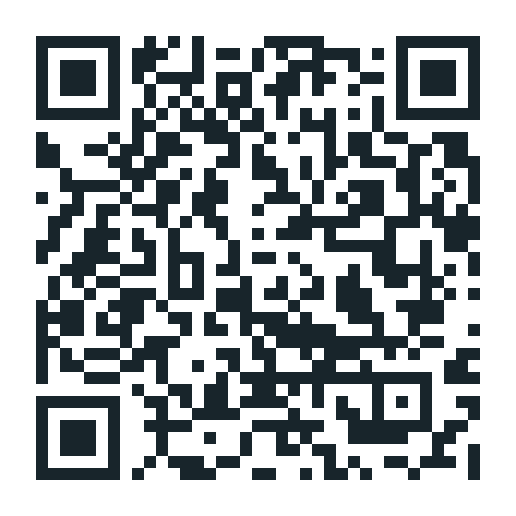

預約方式：在官方 LINE 傳「我想預約」，告訴我想預約的服務（例如「陪伴會談・選一項」「精油側寫＋人類圖」「極致五感重置」），我會親自回覆並安排時間。確認時段和匯款都在 LINE 進行。
實體服務地點：桃園龜山，近林口長庚醫院（目前限女性）。完整地址確認預約後提供，怎麼搭車請看上方「怎麼來找我」。
先從一句話開始，告訴我你現在的狀態，我們再一起決定靠近哪一種陪伴。

用手機相機或 LINE 掃描，訊息會幫你帶好「我想預約」，按傳送就可以。
還不確定選哪一種？加入後點選單的「幫我選」。
我會用 Email 回覆你。之後確認時段和匯款，還是會請你加入官方 LINE。
實體服務在桃園龜山，近林口長庚醫院、機場捷運 A8 長庚醫院站。目前桃園工作室只接待女性，男性朋友請預約線上陪伴。確認預約後，我會把完整地址與最後一段怎麼走一起告訴你。
從台北車站：搭機場捷運台北車站（A1），建議搭直達車，約 2 站，到 A8 長庚醫院站下車。
從板橋：搭環狀線（往新北產業園區）到新北產業園區站，站內轉乘機場捷運，到 A8 長庚醫院站下車。
出站後步行約 12–13 分鐘；也可以在站外租 YouBike。上下班尖峰國道常塞車，這時候搭捷運最準時。
台北車站：966，鄭州路上車，到「林口長庚醫院」站。
圓山：936、937，圓山轉運站上車。
松山、內湖：967，松山機場或民權敦化路口上車。
大同、中山：920，捷運民權西路站上車。
板橋：948，板橋客運站上車，下車站名確認預約後告訴你。
國道客運不能站票，尖峰時段容易客滿過站不停，建議到起點站上車。